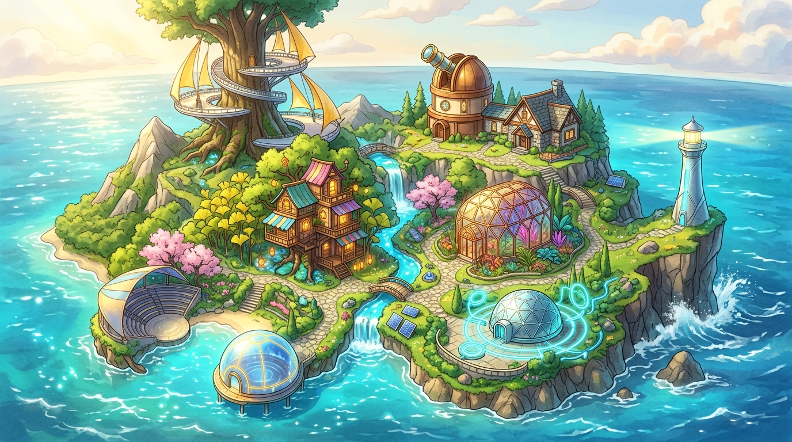
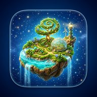

張文華醫師 (Famidoc Chang) 的奇幻科幻創作生態島

歡迎來到張文華醫師 (Famidoc Chang) 的 AI 創作生態島！您可以在此一覽全島五大展館的所有作品，或隨時切回「🗺️ 島嶼地圖」享受沉浸式巡島體驗。
在巨木與雲海交會的露台上，每一幅畫都是光影與水彩的量子顯影。
歡迎登陸「我的AI島」！我是一個已退休、熱愛 AI 的家庭醫學科專科醫師。 這座生態島嶼記錄了我利用 AI 探索科幻與情感邊界的旅程——將科幻敘事、視覺藝術、實證醫學、宇宙哲思與 Vibe Coding 程式設計融合在同一片奇幻海域。
以家庭醫師的溫暖與嚴謹，拆解最新國際期刊，守護大腦與身心健康。
在物理定律與人間煙火氣的交界，書寫關於愛、執念與放手的療癒故事。
探索透明水彩、雙重曝光與 AI 代理工具，讓想像力化為看得見的風景。
只要島上有新畫作、新科普影片或《薛丁格的退休生活》最新章節解鎖，燈塔就會透過量子電波第一時間通知您！
「根據熱力學第二定律，孤立系統總是走向熵增；但只要打開一本好書或看一幅畫，心靈就能瞬間獲得負熵。」

安裝為獨立 App 後，您可以直接從手機主畫面或電腦桌面一鍵登島，享受全螢幕無邊框視野與離線快取巡島體驗！